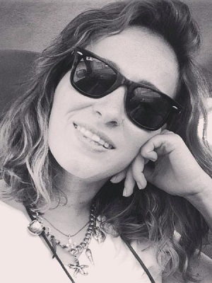

- ФЕСТИВАЛЬ
- АБХАЗСКОЙ
- КУЛЬТУРЫ
- В МОСКВЕ
ПУТЕШЕСТВИЕ
В СТРАНУ ДУШИ
Сайт про фестиваль Абхазской культуры
дней
часов
минут
секунд
M иссия фестиваля
Познакомить с культурой Абхазии.
Вы узнаете об истории абхазской живописи, создании традиционного абхазского оружия, возникновении христианства в Абхазии, познакомитесь с историей Сухума, освоите кулинарные азы национальной кухни и виноделия, пройдете по самым необычным и живописным местам Абхазии: могущественным горным ущельям, древнейшим храмам, замкам, водопадам и озерам, насладитесь прекрасными голосами наших звезд.
К арта фестиваля
-
!
Карта мероприятия
-
N
Навигация
-
1
Декорированная входная группа
-
2
Навигация вдоль аллеи
-
3
Встречающая группа артистов
-
4
Фуд-корт – национальная кухня
-
5
Обеденная зона
-
6
Абхазская ярмарка
-
7
Мастер-классы по танцам и музыкальное сопровождение в национальном стиле
-
8
Мастер-классы «Абхазский лук»
-
9
Сцена
-
10
Фотовыставка вдоль аллеи приуроченная ко Дню Победы
-
11
Навигация в виде растяжек флажков / спонтанные танцы
-
12
Зона турниров. Игра в шашки и шахматы
-
13
Кофе на песке
-
14
Шатёр «Гончарное дело»
-
15
Выставка художественных работ
-
16
Шатёр «Мастер-классы для детей»
-
17
Шатёр «Школа абхазского языка»
-
18
Шатёр «Лекторий/Кинозал»
-
19
Шатёр «Кавказская йога»
-
20
Шатер «Кузня»
-
21
Зона «Абхазское подворье»
-
22
Скульптура-символ фестиваля «Конь-Араш»
-
23
Зона «Абхазские игры»
-
24
Мультимедийная зона «Путешествие в Абхазию»
M ероприятия фестиваля
-
Главная сцена
13:00 - 22:00Выступления национальных ансамблей и артистов
-
Абхазское подворье «Апсуа иашта»
13:00 - 22:00Абхазский двор Традиционные абхазские атрибуты
-
Набережная Сухума
13:00 - 22:00Турниры по нардам
-
Стрельба из абхазского лука
13:00 - 19:00Мастер-классы
-
Ярмарка путешествий
14:00 - 20:00Розыгрыш путевок Информация об отелях, достопримечательностях, услугах, турах в Абхазию
-
Кинотеатр и лекторий
13:00 - 21:00Лекции об истории Абхазии, кинематографе, виноделии, абхазской Фильмы абхазских режиссеров
-
Фотовыставка
13:00 - 21:00Фотовыставка Отто Лакоба
-
Вернисаж картин
13:00 - 22:00Вернисаж картин художников из Абхазии
-
Школа абхазского языка
13:00 - 21:00Мастер-классы по абхазскому языку
-
Абхазская кухня
13:00 - 22:00Мастер классы Фудкорт
-
Кавказская Йога
15:00 - 16:30 / 18:00 - 19:30Знакомство с Кавказской йогой
-
Свадебная церемония
16:00 - 17:00Импровизированная абхазская свадьба
-
Абхазская Ярмарка
12:00 - 22:00Изделия народных промыслов, сувениры и вкусные эксклюзивные национальные продукты
-
Дегустация абхазских вин
14:00 - 19:00 -
Детская зона
12:00 - 21:00Мастер-классы
К ак это было

У частники фестиваля
Художники
-
Аджба Заур
Годы жизни: 19.09. 1956 — 27.09.1993 Член Союза художников Абхазии (1979). Родился 19 сентября 1956 в городе Гудаута, в Абхазской АССР. Обра зование:
1973-1976 гг. Сухумское художественное училище им. А. К. Чачба. С 1979 года — член Молодёжного Объединения Союза художников Абхазии, а в 1987 году принят в члены Союза художников СССР и Союза художников Абхазии. В 1993 году погиб во время грузино-абхазской войны при освобождении города Сухум. Участие в выставках: 1973 г.- первая персональная выставка художника в городе Гудаута. 1985 г.- выставка, посвященная «Дням культуры Абхазии в ГДР». 1990 г.-выставка, посвященная столетию со дня смерти Ван Гога в Австрии. 27 сентября 2013 года в Центральном выставочном зале Союза художников Республики Абхазия состоялась персональная выставка художника. Работы находятся в Государственной национальной картинной галерее Республики Абхазия, в частных коллекциях Австрии, Германии, Голландии, Израиля, Франции, Италии и США.
-
Ампар Адгур
Родился 26.03. 1971 в Гудауте Председатель Союза художников Республики Абхазия (2017—2018). В прошлом бывший священнослужитель Майкопско-Адыгейской епархии Русской православной церкви, иеромонах (снял с себя сан); настоятель монастыря святого Апостола Симона Кананита (2011—2013). Образование: 1986-1990 гг.- Сухумское художественное училище им. А. К. Чачба. 1991-1992 гг. году -Абхазский государственный университет. 1994-1997 гг. в Иконописную школу. Дипломной работой является икона святого великомученика Пантелеимона, находящаяся ныне в храме Троицы Живоначальной в Троицкой слободе в Москве. Участие в выставках: 2015 г.- «Абхазия: душа, воображение, разум», коллективная в Сочи в галерее «Автопространство У» 2021 г. -«Межвременье», персональная выставка в Центральном выставочном зале Республики Абхазия.
-
Ашуба Борис
Родился в 1964 г. в Сухуме. Член Творческого Союза Художников России. Родился в 1964 г. в г. Сухум, Абхазия. Образование: Выпускник Сухумской художественной школы. 1989 г.- закончил Абхазский Государственный Университет. 1993-закончил аспирантуру в Российской Академии Наук, кандидат экономических наук. Участие в выставках: 2018 - персональная выставка «Танец гор» в МДН (Москва). Вручена благодарность за вклад в развитие национальной культуры абхазского народа, сохранение и распространение его истории и традиции. 2018 - в Культурном центре ГлавУпДК при МИД России, к 10-ой годовщине международного признания Абхазии и Южной Осетии. 2019 - в Чеховском центре, к 145-летию народного поэта Абхазии Д. Гулиа. 2019 - «Верю в Солнце», Музей-усадьба «Кусково», ко Дню работников культуры России. Вручен диплом. 2019 - выставка «91 | 19», МГИМО МИД России. 2019 - «Параллели визуального восприятия», в Московском Академическом худ. лицее РАХ. 2020 - Международная художественная выставка-конкурс «Во власти перемен», КЦ «Рублево». Организаторы: Московский союз художников, Арт-студия «Ветер странствий», Всемирная ассоциация художников «ARTGRESSIVE», Русско-германский союз деятелей искусства и литературы (Германия), Международный фонд искусства Эрнесто Трекани (Италия), Французская ассоциация «Современный дизайн» (Франция), РГУ им. А.Н. Косыгина (Технология, дизайн, искусство). Картина «Старый Сухум» заняла призовое место.
-
Бигуаа Мадина
Живописец Живет и работает в г. Сухум. Родилась 18.03. 1972г. в г. Сухум, Абхазская АССР; Член Союза Художников Республики Абхазия. Образование: 1994 г. - окончила исторический факультет АГУ. Участие в выставках: 1988 г. - персональная выставка в г. Сухум; 1992г. - групповые выставки в городах Сухум, Краснодар, Москва, Санкт-Петербург; 2000 г. - персональная выставка в г. Москва; 2021 г. - персональная выставка в г. Сухум (2021) Принимает активное участие во всех городских, зональных, республиканских, международных и зарубежных выставках, организованных Союзом художников РА Работы хранятся: В Государственной Национальной картинной галерее Абхазии, в частных коллекциях России, Канады, Швейцарии.
-
Возба Саид
Живет и работает в г.Сухум. Год рождения: 17.02. 1986 г. Член Союза Художников Республики Абхазия. Образование: 2003-2008 – Абхазский государственный университет, факультет «Изобразительное искусство» Участие в выставках: 2008 г. - первая персональная выставка, на которой было представлено 30 картин (графика) 2009 г. – (февраль) – совместная выставка абхазских художников в Центральном Выставочном Зале Абхазии/Сухум 2010 г. – (июнь) - совместная выставка абхазских художников (Москва, ЦДХ) 2011 г. – совместная выставка в Центральном Выставочном Зале Абхазии /Сухум 2012 г. – совместная выставка абхазских художников (Сухум - Сочи) 2013 г. – совместная выставка абхазо – российских художников (Москва) 2014г. - вторая персональная выставка. Было представлено более 100 картин 2017 г. (18 - 24 апреля) - совместная выставка абхазских художников “Весенняя выставка” Абхазия/Сухум 2019 г. (25 - 31 марта) – совместная выставка профессиональных и начинающих художников в ЦВ зале в г. Сухуме 2019 г. (10 декабря) – выставка посвященная 80-летию Союза художников Абхазии, Сухум/Абхазия 2020 г. (3 июля - 10 августа) - Выставка “Сухум. Праздник, который всегда с тобой”, 2020 г. (сентябрь) – совместная выставка абхазских художников в г. Сухум/Абхазия
-

Габелия Лаша
Художник-живописец, Станковая живопись Живет и работает в г.Сухум. Родился 12.08. 1967 г. в городе Сухум. Образование: В 1982 году поступил в сухумское художественное училище на отделение художественного оформления. Дипломная работа Витраж «Атрибуты искусства». В 1986 году поступил в Тбилисскую академию художеств на факультет монументальной живописи. После завершения учебного года, призвался в Вооруженные силы ССР. После 2-х лет службы в Советской армии, перевелся с Тбилисской академии художеств в Московский Государственный художественный институт им. Сурикова на II курс. По завершении II курса продолжил учебу в мастерской монументальной живописи у Евгения Николаевича Максимова. В 1994 году защитил дипломную работу с присвоением квалификации художник-живописец. В дальнейшей профессиональной деятельности предпочтение было отдано пейзажной, портретной, исторической тематике и другим видам станковой живописи. Занимаемые должности: С 2003 года являлся старшим преподавателем живописи. С 2011 года и по сей день является Заведующим кафедрой изобразительного искусства и дизайна с ученой степенью доцент. Участвует в республиканских и региональных выставках. Работы хранятся в Национальной картинной галерее Абхазии и в частных коллекциях разных стран.
-
Габлия Руслан
Живописец. Живет и работает в городе Сухум. Родился 20.01. 1957 г. в селе Отхара Гудаутского района. Член Союза художников Абхазии. Член Союза художников России. Образование: 1974г.- окончил Отхарскую среднюю школу. 1977-1979гг. учился в Сухумском художественном училище им А.К. Шервашидзе Чачба 1979- 1986гг.- учился в Тбилисской Государственной академии художеств, факультет живописи. Занимаемые должности: С 1986 г. - педагог по живописи и рисунку в Сухумском художественном училище им. А. К. Шервашидзе Чачба. С 2012г.- работает главным художником в Абхазском государственном издательстве. Государственные и общественные награды и премии: В 2005, 2008, 2010, 2020гг.- награждён Государственной премией «Лучшая работа года» Награждён медалью «За отвагу». Участие в выставках: Активно принимает участие во всех выставках, организованных Союзом художников Республики Абхазия. Неоднократно участвовал в международных выставках в городах: Сочи, Краснодар, Нальчик, Ростов, Москва, Санкт-Петербург, Генуя. 1994г.- персональные выставки в гг. Адапазары и Анкара (Турция); 1999г.- персональная выставка в г. Гродно (Республика Беларусь); 2000 и 2003гг.- персональные выставки в городе Сухум (Абхазия). Работы хранятся в Государственной национальной картинной галерее РА, в частных собраниях Англии, Германии, США и Италии.
-
Джапуа Батал
Живоисец, график, сценограф Живет и работает в городе Сухум. Родился 28.03. 1963 года, в г. Сухум. С 2010 член Союза художников России. С 1997 г. член творческого объединения Свободных художников. Образование: В 1977 году окончил Сухумскую художественную школу. 1977- 1980 гг. учился в Сухумском художественном училище им А.К. Шервашидзе Чачба 1980- 1985 годы учился в Ленинградском институте театра, музыки и кинематографии. Получил специальность художник-технолог театра. Занимаемые должности: 1985-1990гг. главный художник в Государственном театре юного зрителя в г.Сухум. 1990 -1992 директор и главный художник Театра юного зрителя в г. Сухум. В январе 1992 г. добровольно пошел служить в Полк внутренних войск Министерства внутренних дел РА. В 1992 -93 гг. принимал участие в грузино-абхазской войне. В разное время являлся командиром: разведгруппы (РДГ), роты, батальона, полка. В конце 1992 года был избран и утвержден начальником штаба Восточного фронта. В этой должности и в звании полковника закончил войну. По окончании войны, с 1993 по 1995 гг. работал главным художником театра юного зрителя, преподавал историю костюма и сценографии в театральной студии. С 1995-1996 гг. являлся руководителем аппарата Президента Республики Абхазия В.Г. Ардзинба и секретарем совета безопасности. Государственные и общественные награды и премии: За боевые заслуги награжден высшим орденом «Орден Леона». В 2001 году удостоен Государственной премии им. Д. Гулия в области искусства. В 2003 году получил звание «Заслуженный художник Адыгеи». Основное работы и произведение: Оформил более тридцати спектаклей, концертов и конкурсов в Абхазии и в разных городах России. Оформил г. Сухум и парад, посвященный празднованию Победы в 1998 и 2003 годах. Автор оформления и иллюстраций книг "Антология абхазской поэзии", М. Ласурия «Аџьынџь», исторического романа «Царь Леон» В.Амаршан, исторического исследования С.Лакоба «Асланбей», серия графических работ к исследованию нартского эпоса Академии наук РА. Автор книги и фильма «Фронт восходящего солнца», посвященной хронике боевых действий грузино-абхазской войне 1992-93 гг. Автор серии абхазских марок «Абхазский мужской национальный костюм конца XVIII начала XIX вв.». Автор коллекции исторического холодного оружия Абхазии. Автор серии монет Республики Абхазия. Автор реконструкции абхазского боевого лука и абхазо-адыгской военной галеры «Ашхуа». Участие в выставках: С 1986 постоянный участник республиканских выставок живописи, графики, декоративно-прикладного искусства.Участник выставок в Сочи, Нальчике, Москве, Санкт-Петербурге, Париже , Хадсоне в Центре искусств М. Шемякина (США ) и т.д.
-
Дзидзария Адгур
Живописец, график, иллюстратор, крикатурист Родился в 1953 г. в г. Сухум, Абхазия. 1977 г. - член секции молодых художников СХ СССР. 1988 г. - член Союза Художников СССР. 1995 г. - член международной ассоциации художников ЮНЕСКО. 1996 г. - член МСХ. Образование: 1968 г. - окончил Сухумскую художественную школу. 1977 г. - окончил Тбилисскую Государственную Академию Художеств. 1982 - 1985 гг. изучал технику эстампа в мастерской профессора Виве Толли. Таллинн, Эстония. Занимаемые должности: 1977 г. сотрудник Министерства Культуры. Абх. АССР 1978 по 1980 гг. Преподаватель спецпредметов в Сухумском художественном училище. 2000 - 2003 гг – карикатурист газеты "РОССIЯ" 2008 - 2010 гг - карикатурист журнала " Русский Newsweek" 2008 Избран заведующим отдела искусствоведения при Союзе художников Абхазии 2011 – 2016 - председатель Союза художников Абхазии. Основные проекты и произведения: Cronos I Воспоминания о несовершенных путешествиях. Картон, коллаж, см. техника; размер: 80х60 см 2011 год Cronos II Богатство уходящего дня. Бумага, коллаж, см. техника; размер: 80х60 см 2011 год Chronos III Жаркая рапсодия Грэйс. Картон, коллаж, см. техника; размер: 80х60 см 2011 год MM IV холст, масло; размер: 80x70 см 2000 год Адам Холст, масло; размер: 91х91 см 2000 год Ева. Холст, масло; размер: 90х90 см 2011 год Календарь забытых дат холст, масло; размер: 120x120 см 1993-2005 год Окно в Азию. холст, масло; размер: 118x100 см 2004 год Память городских стен. холст, масло размер: 150x120 см 1993-2005 год Сладостное погружение. холст, масло; размер: 118x100 см 1999 год Стена понимания. холст, масло размер: 100x80 см 1992 год
-
Кацба Виталий
Живописец, театральный художник Родился 06.03.1953г. в селе Члоу Очамчирского района. Член Союза Художников Республики Абхазия. Член Союза Художников России. Образование: В 1970 1982 гг.- учится в Сухумском художественном училище. В 1978г.- поступает в Тбилисскую академию художеств на факультет живописи, на отделение кино. Занимаемые должности: Главный художник Абхазского государственного драмматического театра им. С.Я.Чанба. С 2000-го года директор Детского Дома творчества «Айнар» С 2016-го года является главным художником Государственного русского театра драмы им. Ф.А.Искандера. Основные проекты и произведения: С 1987 по 1999 год В. Кацба в ранге главного художника театра оформил несколько спектаклей. Среди них: «Берег» Ю. Бондарева, «Кьеджинские перепалки» К. Гольдони, «Царь Леон» А. Агрба, «Пастух Махаз» Ф. Искандера, «Олибей» Д. Чачхалия. Во время успешных гастролей Абхазского драматического театра по странам Ближнего и Дальнего Зарубежья не раз были отмечены костюмы и декорации, выполненные Виталием. Конец 1980 начало 1990 годов были для него творчески насыщенными. Так, в 1989 году в Польше, в г. Устке, он создал более десяти пейзажей. Среди них: «Причал». (холст, масло) и «Утро в Устке». (холст, масло). В 1991 году Виталий участвовал в выставке абхазских художников в Генуе, где были представлены: «Набережная Сухума» (1990г., холст, масло) и два польских пейзажа, написанных во время творческой командировки в Устке. Участие в выставках: В 2006 по 2008 год- посетил Гурзуф, участвовал в Международном симпозиуме живописи и графики под эгидой Международного Черноморского клуба. В 2009 году в Абхазию приехали все художники из стран СНГ, которые принимали участие в этом проекте и работали с местными художниками на пленэре. Итоги творческого соревнования были представлены на совместной выставке в столице Абхазии. Участвует во всех групповых выставках организуемых Союзом Художников Республики Абхазия. Государственные и общественные награды и премии: В 2009 году Российская академия художеств награждает дипломом и благодарит за участие в выставке «Диалог культур в пространстве академической школы» в Москве и Париже. Заслуженный художник Министерства культуры Республики Абхазия. Присуждена премия Министерства культуры РА «Лучший художник года» в 2006 и 2013гг. Работы хранятся в Национальной картинной галерее Республики Абхазия, в частных галереях и коллекциях России, СНГ, Италии, Германии, Канады, Турции и Швейцарии.
-
Кварчелия Сабина
Короткая вводная информация о художнике, достижения, стиль творчества, интересные факты
-
Ласурия Беслан
Живописец Живет и работает в городе Сухум. Родился 14.06. 1965г. в селе Кутол Очамчирского района. Член Союза Художников Республики Абхазия (2001г.) Член Союза художников России (2010г.) Образование: 1985г. закончил Сухумское художественное училище им А.К. Чачба. Занимаемые должности: Работает в Национальной картинной галерее Республики Абхазия хранителем фондов. Работник Абхазского государственного музея. Государственные и общественные награды и премии: Присуждена премия Министерства культуры РА «Лучший художник года» в 2005г. Участие в выставках: Участвует во всех групповых выставках организуемых Союзом Художников Республики Абхазия. Групповая выставка в 2005г. Работы хранятся в Национальной картинной галерее Республики Абхазия, в частных коллекциях России и за рубежом.
-
Логуа Нугзар
Художник, теоретик, поэт, общественный и политический деятель Абхазии Родился 20.04. 1956 в селе Члоу Очамчырского района, Абхазска ССР) — художник, теоретик, поэт, общественный и политический деятель Абхазии; министр культуры Республики Абхазия (2005—2007 и 2010—2011). С 2017г. руководитель отделения искусств АГУ, доцент. С января 2021 года советник Президента РА по вопросам культуры и науки. Родился 20 апреля 1956 году в селе Члоу Очамчирского района Абхазии. В 1973 году окончил среднюю школу в Члоу. С 1974 по 1979 годы учился в Сухумском художественном училище. С 1975 по 1977 годы проходил службу в рядах Советской Армии. С 1979 по 1981 годы работал преподавателем черчения и рисования в селе Члоу, где при Доме культуры открыл детско-художественную студию, которая через год была преобразована в детскую художественную школу. Обучение в Академии художеств В 1981 году поступил в Тбилисскую государственную академию художеств на факультет изобразительного искусства по специальности «живопись». Проходил обучение под руководством известных мастеров живописи — профессора Г. К. Тотибадзе, а затем в мастерской профессора Коки Махарадзе. В 1988 году окончил академию, защитив дипломную живописную работу под названием «Начало». Во время учёбы в академии помимо своей специальности дополнительно брал уроки по скульптуре у известного мастера профессора Георгия Алексеевича Очиаури. С 1989 по 1997 годы работал преподавателем живописи в Сухумском художественном училище. В 1997 году был избран председателем Союза художников Республики Абхазия, а в 2001 году ушёл в отставку по собственному желанию, делая акцент на творчество. Общественно-политическая деятельность С 2003 года активист общественно-политического движения Республики Абхазия «Айтаира» («Возрождение»). С 2004 года член политического совета этого движения. С 10 марта 2005 по 2007 год — министр культуры Республики Абхазия. С февраля 2010 года вторично назначен министром культуры Республики Абхазия. С 2013г. является председателем международного объединения художников «Апсны-Арт». С 2017 г. является председателем РОО «Апсадгьыл». Творчество Преподаватель рисования и черчения в Члоуской ср. школе, 1979-81г.г. Организатор художественной студии а затем и школы при ДК с. Члоу. Преподаватель Сухумского художественного училища, 1988-1994 г.г. С 1994г. по 2007 г. преподаватель живописи в АГУ. Во время Отечественной войны народа Абхазии (1992—1993) был идейным организатором и идеологом художественно-политической артели «Ажвейпшаа» при военном комиссариате Республики Абхазия. Вел сатирические передачи по национальному телевидению. Оказывал помощь и сопровождал гуманитарные рейсы в блокадный город Ткуарчал. В январе 1993 года был одним из организаторов выставки в Санкт-Петербурге (Смольный собор) в поддержку народа Абхазии в освободительной борьбе. Работы хранятся в Национальной картинной галерее Абхазии, в частных коллекциях многих стран мира (Россия, Англия, Италия, Япония, Турция, США и др). Является автором проекта памятника, погибшим в Отечественной войне народа Абхазии 1992—1993 гг. в родном селе Члоу, соавтором проекта памятника в с. Тамыш под названием «Мать Свободы». Является автором скульптурной композиции «Победитель» и руководителем проекта мемориального комплекса, посвященного погибшим в Отечественной войне народа Абхазии в г. Ткуарчал. Является соавтором памятника Народного поэта Абхазии, Багарата Шинкуба, в сквере дома музея национального поэта Венгрии, Шандора Петефи, г. Кишкереш. Увлекается поэзией. Автор многих стихов, публикующихся в официальных печатных органах Республики Абхазия. Является автором многих критических статей об искусстве. Участие в выставках: На профессиональном уровне начал выставляться с 1975 года. С этого же года участвовал во всех зональных республиканских выставках, проходивших в республике по линии Союза художников Абхазии. Участник более 150 выставок. Персональная выставка и вечер, посвященные его сорокалетию (1996, Сухум, фойе Русского театра драмы (кафе «Антркат») Персональная выставка (1998, Сухум, частная галерея «Art-салон») Коллективная (Генуя выставка в честь 500-летия открытия Америки Х. Колумбом). Персональная выставка в республике Сан Марино в 2010г., в галерее Сан Марино. Персональная выставка в Италии, г. Пезаро, 2012г.
-
Пилия Мария
Живописец Живет и работает в городе Сухум и в Москве. Родилась в г. Сухум 21 апреля 1982г. Член Московского Союза Художников с 2005 г. Член Союза Художников Абхазии. Образование: С 1988-1992гг. училась в средней школе №2 г. Сухум. Посещала художественную студию Г.З.Лакоба. С 1993-1999гг. училась в средней школе № 11 г. Москвы. В 1999г. поступила на подготовительный факультет МГАХИ им. В.И. Сурикова. В 2000г. поступила в МГАХИ им. В.И.Сурикова на факультет живопись, очная форма. В 2003г. поступила в мастерскую станковой живописи проф. Т.Г. Назаренко В 2006г. Защитила диплом на тему “Абхазская кухня “ на отлично. Занимаемые должности: С 2014 года основатель студии живописи для детей и врослых Art Studio в г.Сухум. Работы находятся в частных коллекциях в России и за рубежом, а также у министра атомной энергетики РФ Кириенко С.В., президента Абхазии Багапш С.В. С 2016 г. Директор Общеобразовательной частной школы "Алашара" в г.Сухум. Участие в выставках: 2003г. - "Молодежная выставка МСХ" Кузнецкий Мост 11. г.Москва. 2005г. - "Молодежная выставка МСХ" Кузнецком Мост 11. г. Москва. 2006г.- Участие на выставке, приуроченной к съезду кавказских республик в Абхазии в ЦВЗ г. Сухум. 2007г. - Всероссийская Художественная выставка “Молодые художники России 2007” ЦДХ г.Москва. 2007г. -"Молодежная выставка МСХ" Кузнецкий Мост 11. г.Москва. 2008г. - Первая персональная выставка в ЦВЗ г. Сухум. Абхазия. 2008г.- Участие в групповой выставка в галерее "На Каширке". 2009г. - Групповая выставка абхазских художников в ЦВЗ. г.Сухум 2009г. - Групповая выставка в галерее "Периметр" . Гостиный Двор. Москва. 2009г. - Двойная персональная выставка "Россия-Абхазия". Культрный Центр Вооруженных Сил РФ. Москва. 2010г. - Участие в выставке "Диалог культур в пространстве академической школы". Штаб-квартира ЮНЕСКО. Париж. 2010г.. - Персональная выставка в рамках биеннале молодого искусства "Стой!Кто идет?". Музей - Заповедник Царицыно. Москва. 2011г - Персональная выставка в ресторане Маэстро в г. Сухум. 2013г .-Персональая выставка в ресторане Bellagio в Москве. 2015г. – Персональная выставка совместно с учениками студии Art Studio Марии Пилия в г.Сухум в помещении старой станции вокзала (станция Гума) 2015г. - Персональная выставка в галерее Twinhall в Москве при поддержке Абхазской диаспоры. 2017г.-выставка абхазских художников в выставочном зале Российского Союза Художников г.Москва 2019г. -участие в выставке на Apsnyfest в Москве в парке на Красной Пресне
-
Хагба Апща
Живет и работает в городе Сухум. Родилась 08.03.82г. Республики Абхазия. Член Союза Художников Абхазии (2018) Образование: Училась в КБГУ (юридический факультет), Сухумское художественное училище (живопись) Участие в выставках: 2015г -персональная выставка. 2021 вторая персональная выставка. (Пленэр) 2015 год-участник выставки на культурной площадки «sklad». 2019 -воркшоп и совместная выставка (техника левкас, и отходы строй материалов) на культурной площадке «sklad.” 2017 -совместная выставка союза худ. РА. 2017 -участие и диплом в выставке «Художники России -за чистую воду» .г Сочи. 2018 - участие в совместной выставке СХРА 2018 -участие в проект «Ловки Счастья» -лавка установлена в Сухумском порту. 2019-совместная выставка 4 художников. (итоги 2го-пленэра) 2019 -совместная выставка с х РА 2020-совместная выставка 4 художников- участие-графика. Работы хранятся в частных коллекциях Абхазии, России, Англии.
-

Хинтба Диана
Живет и работает в городе Сухум. Родилась в городе Сухум, Абхазия. В 1999 г. Член Союза Художников Республики Абхазия. Образование: Закончила Сухумскую 10-ю среднюю школу. В 2005 году филологический факультет АГУ. Занималась живописью в студии Е. Котлярова. В 2003 году продолжила обучение в студии художника Батала Джапуа. В 2011 году прошла обучение в Университете искусств Лондона Central Saint Martins, мастерская Майкла Мейджора. В 2018 году продолжила работу в студии Батала Джапуа. Занимаемые должности: В 2003 году, в Сухуме, состоялась ее первая персональная выставка. В 2016 году при поддержке Министерства культуры и охраны историко-культурного наследия прошла ее вторая персональная выставка. В 2018 году прошла ее третяя персональная выставка. Участвует в тематических и ежегодных выставках Союза художников Абхазии, а так же в выставочных проектах в Абхазии и за рубежом. Государственные и общественные награды и премии: В 2017 и 2020 году удостоена грамоты “Лучшая работа года” от Министерства Культуры и Охраны Историко-Культурного наследия Республики Абхазия а так же удостоена грамоты “Лучший Художник Года” по результатам голосования на сайте Информационного Агенства Sputnik Абхазия. Картины художницы находятся в частных коллекциях в Абхазии, России, Италии, Англии, Исландии, России, Шотландии, Хорватии, Сербии, Кении и других странах. Так же в коллекции Музея Востока (Майкоп).
-
Цвижба Виссарион
Живописец Живет и работает в г.Сухум Республики Абхазия. Родился 19.07. 1943 года в с.Члоу Очамчирского района (Абхазия). Член Союза Художников Республики Абхазия с 1976 года. Член Союза художников Российской Федерации. Образование: В 1965 году закончил Тбилисское художественное училище им.Н.Николадзе, учителями были В.А. Шерпилов, Г.Тоидзе. В 1972 году закончил Тбилисскую Государственную Академию художеств, факультет живописи класс А.К. Куталадзе, педагоги: В.И. Шухаев, К.М. Махарадзе, Э. Каландадзе Занимаемые должности: Работал художественным редактором журнала «Искусство Абхазии», В 1973 году он начинает работать в Сухумском художественном училище. В 1975-1976 гг. так же с 2002-2008гг. является директором Сухумского художественного училища. Работает главным художественным редактором детского журнала «Амцабз». Основные проекты и произведения: В 2009 году интерьер дома отдыха «Самшитовая роща» расписан Сергеем на древние мифологические темы об аргонавтах. Несмотря на то, что сюжеты из мифа размещены хаотично, мы воспринимаем работу художника как цельное и стройное произведение, благодаря удачно найденной композиции. С 1972г. принимает участие в городских, краевых, зональных, республиканских и зарубежных выставках: в России, Польше, Чехословакии, Германии, Турции, Италии и т.д. Проводил несколько персональных выставок живописи и графики в Абхазии. Государственные и общественные награды и премии: Награжден медалью Республики Абхазия «ЗА ОТВАГУ». Награжден медалью Республики Абхазия «ЗА ПОБЕДУ» Золотая медаль Союза художников России Награжден Золотым орденом Российской Академии Художеств. Благодарность Российской Академии Художеств за участие в выставке «Диалог культур в пространстве академической школы» Грамота за большой вклад в Национально-освободительном движении народа Абхазии. Премия Министерства культуры «Лучший художник года» 2014 и 2020гг. Произведения художника находятся в Государственной Национальной картинной галерее Республики Абхазия и Грузии, художественном Фонде России, филиале музея искусств народов Востока в Адыгее, г.Майкоп, Государственном музее Кабардино- Балкарии, Ржевской художественной галерее им. А.С. Пушкина, музей имени Кадырова в городе Грозный, находятся в частных галереях России, Турции, Канады, США, Англии др.
Артисты
-
Батал Джапуа
Короткая вводная информация о художнике, достижения, стиль творчества, интересные факты
-
Ампар Адгур
Короткая вводная информация о художнике, достижения, стиль творчества, интересные факты
-
Адгур дзидзария
Короткая вводная информация о художнике, достижения, стиль творчества, интересные факты
-
Диана Хинтба
Короткая вводная информация о художнике, достижения, стиль творчества, интересные факты
Спикеры
-
Батал Джапуа
Короткая вводная информация о художнике, достижения, стиль творчества, интересные факты
-
Ампар Адгур
Короткая вводная информация о художнике, достижения, стиль творчества, интересные факты
-
Адгур дзидзария
Короткая вводная информация о художнике, достижения, стиль творчества, интересные факты
-
Диана Хинтба
Короткая вводная информация о художнике, достижения, стиль творчества, интересные факты
Мастера
-
Батал Джапуа
Короткая вводная информация о художнике, достижения, стиль творчества, интересные факты
-
Ампар Адгур
Короткая вводная информация о художнике, достижения, стиль творчества, интересные факты
-
Адгур дзидзария
Короткая вводная информация о художнике, достижения, стиль творчества, интересные факты
-
Диана Хинтба
Короткая вводная информация о художнике, достижения, стиль творчества, интересные факты